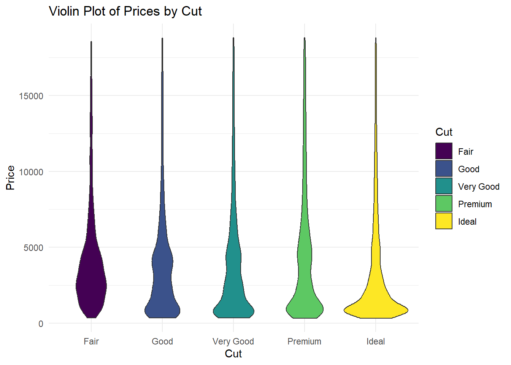
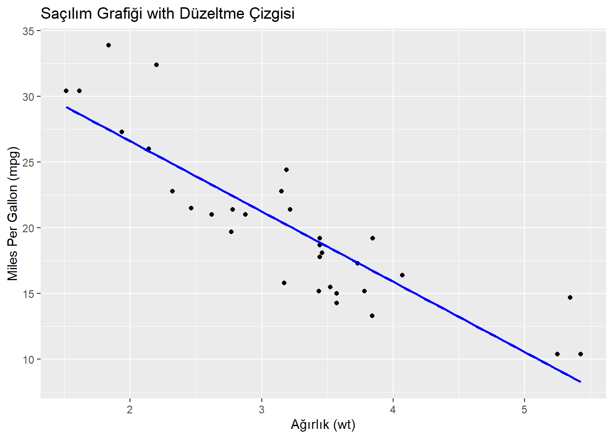
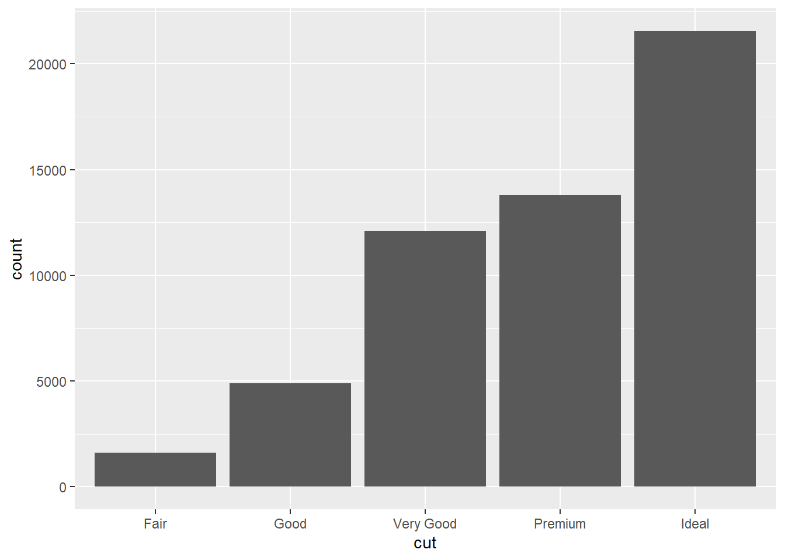
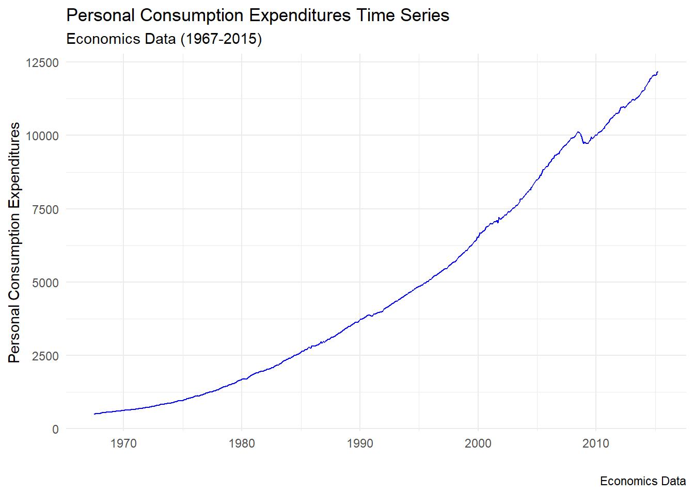
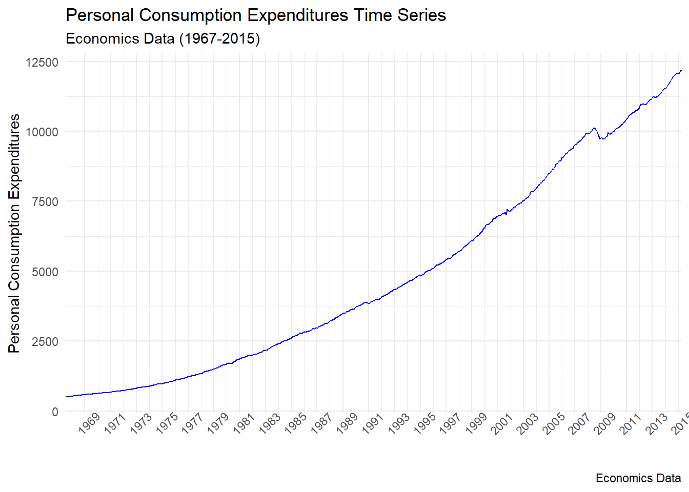

library(ggplot2)
library(dplyr)
ggplot(diamonds, aes(price)) +
geom_histogram()

Bu bölümde ggplot2 paketi ile verilerin nasıl görselleştirldiğine bakacağız. ggplot2 grafiklerin dil bilgisi (grammar of graphics) prensiplerini temel alarak oluşturulmuştur. Bu prensiplere göre her grafik aynı parçalardan oluşturulabilir: bir veri seti, koordinat sistemi, ve “geom”lar - veri noktalarını temsil eden görsel işaretler.
ggplot2 ile veri görselleştirebilmemiz için önce grafik yapısını iyi tanımamız gerekiyor. Yatay eksen x ekseni, dikey eksen ise y ekseni olarak kabul ediliyor. Veri görselleştirmede ggplot() fonksiyonunu kullanıyoruz. ggplot() fonksiyonu içinde veri seti ismi ve aes() adlı estetik argümanına yatay ve dikey eksende kullanacağımız değişkenler (sütun isimleri) ile yer veriyoruz. Sonrasında, tercih edeceğimiz grafik tipine göre, geom fonksiyonlarından birini kullanacağız. Sıklıkla kullanılan geom fonksiyonları şunlardır:
Nokta grafiği için geom_point()
Çubuk veya sütun grafik için geom_col() ve geom_bar()
Çizgi grafiği için geom_line()
Histogram grafiği için geom_histogram()
Boxplot grafiği için geom_boxplot()
Dağılım grafikleri, veri setinin dağılımını görsel olarak temsil etmek için kullanılan grafik türleridir. Bu grafikler, veri noktalarının, değerlerinin veya gözlemlerinin nasıl dağıldığını incelemek ve veri setindeki desenleri, eğilimleri ve aykırı değerleri anlamak için kullanılır. En yaygın olanı histogram grafikleridir.
Histogram, veri setinin sayısal dağılımını gösteren bir grafiktir. Veri aralığı belli bir aralığa bölen çubuklardan oluşur ve her çubuk, bu aralıktaki veri noktalarının sayısını temsil eder. Histogramlar genellikle sürekli verilerin dağılımını göstermek için kullanılır.
Bunun dışında boxplot (kutu) grafikleri de dağılımı görselleştirmek için kullanılmaktadır. Boxplot, veri setinin beş özet istatistiği (minimum, ilk çeyrek, medyan, üçüncü çeyrek, maksimum) kullanarak veri dağılımını temsil eder. Bu grafik, aykırı değerleri tanımlamak ve merkezi eğilim ile dağılımın yayılmasını görsel olarak incelemek için kullanılır.
geom_histogram fonksiyonu, ggplot2 paketinde kullanılan bir grafik geometrisidir ve histogram oluşturmak için kullanılır.
library(ggplot2)
library(dplyr)
ggplot(diamonds, aes(price)) +
geom_histogram()
binwidth parametresi, histogramdaki sütunların genişliğini (veya “bin” genişliğini) belirlemek için kullanılır. Histogram, veri setini belirli aralıklara böler ve her aralıkta kaç gözlem olduğunu gösteren sütunlardan oluşur. Bu aralıklara “bin” denir ve binwidth parametresi, bu aralıkların genişliğini belirler.
ggplot(diamonds, aes(price)) +
geom_histogram(binwidth = 1000,fill = "green")
Bu örnekte, binwidth = 1000 ifadesiyle belirtilen bin genişliği ile bir histogram oluşturulmuştur. Bu, veri setini 1000 birim genişliğinde olan aralıklara bölecektir.
geom_histogram fonksiyonu aynı zamanda bins parametresini de kullanarak histogramdaki sütun sayısını belirlemenize olanak tanır. bins parametresi, veri setinin aralıklara bölünme sayısını belirler.
# Karat değerlerinin histogramı
ggplot(diamonds, aes(x = carat)) +
geom_histogram(bins = 30, fill = "skyblue", color = "black") +
labs(title = "Histogram of Diamond Carat",
x = "Carat",
y = "Frequency")
Bu örnekte, bins = 30 ifadesiyle belirtilen 30 sütunlu bir histogram oluşturulmuştur. fill ve color parametreleri, sütunların içinin ve kenar çizgilerinin renklendirilmesi için kullanılmıştır.
alpha argümanı, ggplot2 paketinde kullanılan bir estetiktir ve bir geometrinin (örneğin, nokta, çizgi, sütun, vb.) saydamlığını kontrol etmek için kullanılır. alpha değeri, 0 ile 1 arasında bir sayıdır; 0 tamamen şeffaflığı (görünmez) ve 1 tam opaklığı temsil eder.
Özellikle, alpha argümanı, bir nesnenin diğer nesnelerle örtüldüğü durumları görselleştirmek için kullanışlıdır. Örneğin, nokta, sütun veya çizgilerin birbirini örttüğü durumlarda kullanılabilir.
# Kesim sınıflarına göre karat yoğunluk fonksiyonları ile grafik oluştur
ggplot(diamonds, aes(x = carat, fill = cut)) +
geom_density(alpha = 0.5, color = "black") +
labs(title = "Density Plot of Carat by Cut",
x = "Carat",
y = "Density",
fill = "Cut") +
theme_minimal()Bu örnekte, geom_density fonksiyonunu kullanarak elmasların karat değerlerinin kesim sınıflarına göre yoğunluk fonksiyonlarını gösteren bir grafik oluşturduk. alpha = 0.5 ifadesiyle belirtilen saydamlık düzeyi, farklı kesim sınıflarına ait yoğunluk fonksiyonlarının birbirini örttüğü bölgeleri daha iyi görselleştirmek için kullanılmıştır. color = "black" ifadesi ise çizgi renklerini belirtir.
theme_minimal, ise ggplot2 paketinde bulunan bir tema (theme) fonksiyonudur. Tema fonksiyonları, grafiklerin görünümünü özelleştirmek için kullanılır ve çeşitli özellikleri kontrol eder. theme_minimal özel bir temadır ve belirli bir stilde basitleştirilmiş bir görünüm sağlar. Bu tema, grafik üzerindeki çizgi ve arka plan öğelerini minimalist bir şekilde düzenler. Yani, daha az çerçeve, gölgeleme ve artı dekoratif özellik içerir. Bu, veriyi vurgulamak ve grafiği daha okunabilir hale getirmek amacıyla kullanılır.
facet_wrap fonksiyonu, ggplot2 paketinde bir tema (facet) fonksiyonudur ve veriyi belirli bir faktör veya değişkenle bölerken, aynı grafik tasarımını korumak için kullanılır. Bu, veri setinizin bir kategorisine göre alt grafikler oluşturmanıza olanak tanır.
Örneğin, “diamonds” veri setindeki kesim sınıflarına (cut) göre karat (carat) değerlerini gösteren bir grafik oluşturalım ve bunu facet_wrap kullanarak kesim sınıflarına göre ayrı alt grafiklere bölelim.
# Kesim sınıflarına göre karat değerlerini gösteren grafik oluştur
ggplot(diamonds, aes(x = carat, fill = cut)) +
geom_density(alpha = 0.5, color = "black") +
labs(title = "Density Plot of Carat by Cut",
x = "Carat",
y = "Density",
fill = "Cut") +
facet_wrap(~cut, scales = "free_y") +
theme_minimal()Bu örnekte, facet_wrap(~cut, scales = "free_y") ifadesi ile “cut” değişkenine göre alt grafiklere bölme işlemi gerçekleştirilmiştir. scales = "free_y" ifadesi, y eksenlerinin serbest bırakılmasını, yani her bir alt grafikte y eksen ölçeğinin kendi içinde adapte edilmesini sağlar. Bu, alt grafikler arasında karşılaştırma yapmayı kolaylaştırır.
facet_grid fonksiyonu, ggplot2 paketinde bir başka tema (facet) fonksiyonudur ve iki faktörü kullanarak bir tabloyu alt grafiklere böler. facet_wrap fonksiyonu ile benzerdir, ancak farklı bir düzenleme yapısına sahiptir. Örneğin, “diamonds” veri setindeki kesim sınıflarına (cut) ve renklere (color) göre karat (carat) değerlerini gösteren bir grafik oluşturalım.
# Kesim sınıflarına ve renklere göre karat değerlerini gösteren grafik oluştur
ggplot(diamonds, aes(x = carat, fill = cut)) +
geom_density(alpha = 0.5, color = "black") +
labs(title = "Density Plot of Carat by Cut and Color",
x = "Carat",
y = "Density",
fill = "Cut") +
facet_grid(cut ~ color, scales = "free_y") +
theme_minimal()geom_boxplot, ggplot2 paketinde kullanılan bir geometri fonksiyonudur ve veri setindeki bir sayısal değişkenin (örneğin, fiyat, karat, vb.) dağılımını görselleştirmek için kullanılır. Bu fonksiyon, bir kutu çizgisinin çizilmesi ve altında ve üstünde yer alan uç (whisker) hatlarıyla birlikte medyan ve çeyrekliklerin görüntülenmesini sağlar.
Kutu grafikleri, veri dağılımının merkezi eğilimini, yayılımını ve simetrisini hızlı bir şekilde gösteren etkili bir araçtır. Aşağıda, “diamonds” veri setindeki kesim sınıflarına göre fiyatların geom_boxplot kullanılarak nasıl görselleştirileceğine dair bir örnek bulunmaktadır.
# Kesim sınıflarına göre fiyatları gösteren boxplot oluştur
ggplot(diamonds, aes(x = cut, y = price, fill = cut)) +
geom_boxplot() +
labs(title = "Boxplot of Prices by Cut",
x = "Cut",
y = "Price",
fill = "Cut") +
theme_minimal()Bu kod, her bir kesim sınıfının fiyat dağılımını gösteren bir boxplot oluşturur. Her bir kutu, verinin çeyrekliklerini (Q1, medyan, Q3) temsil eder ve uç hatlar (whisker) genellikle verinin genel yayılımını gösterir. Bu şekilde, elmas fiyatlarının kesim sınıfları arasındaki dağılımı hızlı bir şekilde görebilirsiniz.
geom_boxplot kullanırken ortalamayı göstermek için bazı ek ayarlamalar yapabiliriz. Özellikle, stat_summary fonksiyonunu kullanarak ortalamayı içeren bir çizgi ekleyebiliriz. Aşağıda, stat_summary fonksiyonunu kullanarak her kutu içindeki ortalamayı gösteren bir örnek bulunmaktadır.
# Kesim sınıflarına göre fiyatları gösteren boxplot oluştur
ggplot(diamonds, aes(x = cut, y = price, fill = cut)) +
geom_boxplot() +
stat_summary(
fun = mean,
geom = "point",
shape = 18,
size = 3,
color = "red",
position = position_dodge(0.75)
) +
labs(title = "Boxplot of Prices by Cut with Mean",
x = "Cut",
y = "Price",
fill = "Cut") +
theme_minimal()position = position_dodge(0.75) ifadesi, stat_summary fonksiyonu içinde kullanılarak ortalamayı temsil eden noktaların (mean points) yatay yönde bir miktar kaydırılmasını ifade eder. Bu, ortalamayı gösteren noktaların, boxplot içinde daha düzenli ve anlamlı bir şekilde görünmesini sağlamak için kullanılır.
Detaylı olarak açıklamak gerekirse; position_dodge(0.75), noktaların kutuların içinde yatay yönde ne kadar kaydırılacağını belirtir. Bu değer 0 ile 1 arasında bir sayıdır ve 0, hiç kaydırma anlamına gelirken, 1, tamamen ayrık bir konumu temsil eder. Yani, 0.75, noktaların bir miktar sağa kaydırılmasını ifade eder. Bu birim genellikle x-eksenindeki veri genişliği ya da ölçeğine bağlıdır. Eğer x-eksenindeki veriler sayısal değilse (örneğin, kategorik değişkenler) birim genişliği birimi anlam taşımaz ve yatay konumları düzenlemede başka bir anlam ifade edebilir. Ancak, sayısal veri genişliği olan durumlarda, bu birim genişliği x-eksenindeki veri aralığına karşılık gelir.
position_dodge fonksiyonunda belirtilen değer 1’den büyük olabilir. Ancak, 1’den büyük bir değer kullanmak genellikle uygunsuz sonuçlara yol açar. Bu durumda, noktalar birbirine çok yakın hale gelir ve grafik üzerinde karışıklık olabilir. Ayarlamayı denemek ve grafik üzerindeki etkilerini gözlemlemek, en iyi sonuca ulaşmak için önemlidir.
Bu şekilde, ortalamayı gösteren noktalar, kutular içinde daha rahat bir şekilde görünebilir ve boxplot üzerinde daha net bir şekilde ayrılabilir. Bu tür ayarlamalar, grafiklerin daha okunabilir ve anlaşılır olmasına katkıda bulunabilir.
Boxplot grafiğine benzer şekilde kullanabileceğimiz başka bir grafik çeşidi ise violin grafikleridir. Violin grafiği, bir sayısal değişkenin dağılımını görselleştirmek için kullanılır. Violin grafiği, bir kutu plotunun etrafına simetrik olarak yerleştirilen birer çift yay (kernel density estimate) içerir. Bu yaylar, veri setinin yoğunluk fonksiyonunu temsil eder ve kutu plotunun içindeki medyan, çeyreklikler ve diğer istatistiklerle birleştirilir.
Violin grafiği, kutu plotunun sunduğu merkezi eğilim ve yayılım bilgilerine ek olarak, veri setinin dağılımının şekli ve yoğunluğu hakkında daha fazla bilgi sağlar. Grafiğin geniş kısımları, veri setinin yoğun olduğu bölgeleri temsil ederken, dar kısımlar daha düşük yoğunluğa sahip alanları gösterir. Bu sayede, violin grafiği veri setinin dağılımının görsel bir özetini sunar.
# Kesim sınıflarına göre fiyatların violin grafiği
ggplot(diamonds, aes(x = cut, y = price, fill = cut)) +
geom_violin() +
labs(title = "Violin Plot of Prices by Cut",
x = "Cut",
y = "Price",
fill = "Cut") +
theme_minimal()
Bu violin grafiği, kesim sınıfları arasında fiyat dağılımlarını karşılaştırmak için kullanılır. Violin grafiği, her bir kesim sınıfının fiyat yoğunluğunu ve merkezi eğilimini görsel olarak özetler.
Saçılım (scatter) grafiği, genellikle fizik ve istatistik gibi bilimlerde kullanılan bir grafik türüdür. Saçılım grafiği, iki değişken arasındaki ilişkiyi görsel olarak göstermek için kullanılır. Bir eksende bir değişkenin değerleri, diğer eksende ise diğer değişkenin değerleri yer alır. Her bir nokta, veri setindeki bir gözlem birimini temsil eder. İki değişken arasındaki ilişki, noktaların dağılımı üzerinden anlaşılabilir.
Saçılım grafiklerinin temel amaçları şunlar:
İki Değişken Arasındaki İlişkiyi Görselleştirme: Saçılım grafikleri, iki değişken arasındaki ilişkiyi anlamak için etkili bir araçtır. Pozitif, negatif, ya da hiçbir ilişki olup olmadığını hızlıca gösterir.
Aykırı Değerleri ve Dağılımı Kontrol Etme: Saçılım grafikleri, aykırı değerleri ve değişkenlerin dağılımını görsel olarak kontrol etmek için kullanılır.
Korelasyon Analizi: İki değişken arasındaki korelasyonu değerlendirmek için saçılım grafikleri kullanılabilir. İki değişken arasındaki doğrusal ilişkiyi belirlemek için korelasyon katsayısı kullanılabilir.
Saçılım grafiği kullanarak, iki değişken arasındaki ilişkinin doğası hakkında bilgi edinebilirsiniz. Örneğin, pozitif bir korelasyon varsa, veri noktaları genellikle yukarı doğru bir eğilim gösterirken, negatif bir korelasyon varsa, veri noktaları genellikle aşağı doğru bir eğilim gösterir. Korelasyon olmaması durumunda ise veri noktaları dağınık bir şekilde yayılmış olur. Saçılım grafiği, istatistiksel analizlerde veri keşfi yapmak ve ilişkileri anlamak için önemli bir araçtır.
Şimdi, bir örnek üzerinden saçılım grafiklerini R ile nasıl oluşturabileceğinize bakalım. Aşağıda, R’de mtcars veri seti üzerinden bir örnek bulunmaktadır.
# Saçılım grafiği oluşturma
ggplot(mtcars, aes(x = wt, y = mpg)) +
geom_point() +
labs(title = "Saçılım Grafiği",
x = "Ağırlık (wt)",
y = "Miles Per Gallon (mpg)")Bu örnekte, mtcars veri setindeki ağırlık (wt) ve yakıt verimliliği (mpg) değişkenleri arasındaki ilişkiyi gösteren bir saçılım grafiği oluşturduk. ggplot2 paketini kullanarak ggplot fonksiyonu ile grafiği oluşturduk, ardından geom_point() fonksiyonu ile noktaları ekledik ve labs() fonksiyonu ile ekseni etiketledik.
Aşağıdaki örnek, çeşitli argümanların nasıl kullanılabileceğini göstermektedir. Saçılım grafiklerinde kullanılabilen birçok farklı argüman vardır ve ihtiyacınıza göre bunları özelleştirebilirsiniz. Bu argümanlar, grafikteki renkler, şekiller, boyutlar, saydamlıklar ve diğer estetik özellikleri kontrol etmenize olanak tanır.
# Saçılım grafiği oluşturma ve özellikleri belirleme
ggplot(mtcars, aes(x = wt, y = mpg, color = factor(cyl), size = hp)) +
geom_point(shape = 16, alpha = 0.7) + # Nokta şekli ve saydamlık
labs(title = "Saçılım Grafiği",
x = "Ağırlık (wt)",
y = "Miles Per Gallon (mpg)",
color = "Silindir Sayısı",
size = "Güç (hp)") +
theme_minimal() + # Tema seçimi
scale_color_manual(values = c("red", "green", "blue")) # Renk paleticolor: factor(cyl) ile silindir sayısına göre renklendirme.
size: hp ile güç değerine göre nokta boyutu.
shape: 16 ile nokta şekli belirleme.
alpha: 0.7 ile nokta saydamlığı.
labs(): Grafik başlığı ve ekseni etiketleri.
theme_minimal(): Minimal bir tema seçimi.
scale_color_manual(): Renk paletinin manuel olarak belirlenmesi.
geom_smooth(), ggplot2 paketinde bulunan bir geometrik fonksiyondur ve saçılım grafiklerine regresyon çizgisi veya düzeltme çizgisi eklemek için kullanılır. Bu fonksiyon, veri üzerinde düzenli bir eğilimi görselleştirmek veya iki değişken arasındaki ilişkiyi özetlemek amacıyla kullanılır.
geom_smooth() fonksiyonu, özellikle saçılım grafiklerindeki noktalar arasındaki eğilimi ifade etmek ve bu eğilimi göstermek için kullanılır. Bu çizgi, genellikle loess düzeltme çizgisi veya lineer regresyon çizgisi gibi yöntemlere dayanabilir.
LOESS (LOcally WEighted Scatterplot Smoother), bir veri setindeki noktalar arasındaki düzenliği ifade etmek için kullanılan bir regresyon yöntemidir. LOESS, birçok noktadan oluşan bir saçılım grafiğine uygulandığında, bu grafiği daha yumuşak bir eğriyle düzeltir ve genel bir eğilimi ifade eder.
LOESS yöntemi, her bir noktanın çevresindeki komşu noktalara daha fazla ağırlık verir ve bu ağırlıkları kullanarak her bir noktanın regresyonunu hesaplar. Böylece, LOESS yöntemi, veri setindeki lokal düzenlemeleri daha iyi yakalayabilir ve genel eğilimi daha esnek bir şekilde ifade edebilir.
Aşağıda, geom_smooth() fonksiyonu ile mtcars veri seti üzerinde bir örnek bulunmaktadır:
# Saçılım grafiği oluşturma ve düzeltme çizgisi ekleme
ggplot(mtcars, aes(x = wt, y = mpg)) +
geom_point() +
geom_smooth(method = "lm", se = FALSE, color = "blue") +
labs(title = "Saçılım Grafiği with Düzeltme Çizgisi",
x = "Ağırlık (wt)",
y = "Miles Per Gallon (mpg)")`geom_smooth()` using formula = 'y ~ x'
Bu örnekte:
geom_smooth() fonksiyonu, düzeltme çizgisini eklemek için kullanılmıştır.
method = "lm" parametresi, lineer regresyon modelini kullanmasını belirtir.
se = FALSE parametresi, güven aralığını göstermemesini sağlar.
color = "blue" parametresi, düzeltme çizgisinin rengini belirler.
Bu örnek, ağırlık (wt) ile yakıt verimliliği (mpg) arasındaki ilişkiyi gösteren bir saçılım grafiği oluşturur ve bu grafiğe bir lineer regresyon düzeltme çizgisi ekler. Bu düzeltme çizgisi, iki değişken arasındaki genel eğilimi görsel olarak özetler.
se=TRUE parametresi, geom_smooth() fonksiyonu kullanılarak eklenen düzeltme çizgisi veya eğilim çizgisi etrafında güven aralığı (confidence interval) göstermek için kullanılır. Güven aralığı, regresyon çizgisinin tahmini değeri etrafında belirli bir güven düzeyindeki belirsizliği ifade eder.
Aşağıda, se=TRUE parametresi ile geom_smooth() kullanarak bir örnek bulunmaktadır:
# Saçılım grafiği oluşturma ve düzeltme çizgisi ile güven aralığı ekleme
ggplot(mtcars, aes(x = wt, y = mpg)) +
geom_point() +
geom_smooth(method = "loess", se = TRUE, color = "blue") +
labs(title = "Saçılım Grafiği-LOESS Düzeltme Çizgisi ve Güven Aralığı",
x = "Ağırlık (wt)",
y = "Miles Per Gallon (mpg)")`geom_smooth()` using formula = 'y ~ x'geom_smooth(method = "loess", se = TRUE, color = "blue") satırı, LOESS düzeltme çizgisini eklerken aynı zamanda güven aralığını da gösterir.
se = TRUE parametresi, güven aralığını etkinleştirir.
color = "blue" parametresi, çizginin rengini belirler.
Bu örnek grafiğin sağ tarafında çizilen mavi bant, LOESS düzeltme çizgisinin etrafında %95 güven aralığını temsil eder. Yani, her x değeri için bu bant içinde düzeltilmiş tahmini değerlerin olasılığı %95’tir. Güven aralığı, regresyon çizgisinin ne kadar güvenilir olduğunu ve tahminlerin belirli bir güven düzeyinde ne kadar kesin olduğunu anlamak için kullanılır.
Sütun grafikleri, verileri kategorik veya gruplara göre temsil etmek için kullanılan bir grafik türüdür. Bu grafik türü, farklı kategorilerin veya grupların sayısal değerlerini karşılaştırmak veya görselleştirmek için kullanılır. Sütun grafikleri dikey çubuklardan oluşur ve her çubuk, bir kategori veya grup için bir değeri temsil eder. Sütun grafiklerinin temel bileşenleri şunlardır:
Yatay Eksen (X-Eksen): Bu eksende kategoriler veya gruplar yer alır. Örneğin, bir yıl boyunca aylar, ürün kategorileri, bölgeler veya şirket departmanları gibi farklı kategoriler olabilir.
Dikey Eksen (Y-Eksen): Bu eksende sayısal değerler yer alır ve sütunların yükseklikleri bu değerleri temsil eder. Değerler genellikle sayısal verilerdir ve karşılaştırılabilir bir ölçü birimi içinde bulunurlar.
Sütunlar: Sütunlar, her bir kategori veya grup için bir değeri temsil eder. Sütunların yükseklikleri, karşılaştırılan değerlerin büyüklüğünü veya ilişkilerini gösterir.
Sütun grafikleri, aşağıdaki amaçlar için kullanılır:
Karşılaştırmalar: Farklı kategorilerin veya grupların değerlerini karşılaştırmak için kullanılır. Örneğin, farklı ülkelerin gayri safi yurtiçi hasıla (GSYİH) değerlerini karşılaştırmak için sütun grafikleri kullanılabilir.
Zaman İçi Değişim: Zaman serisi verilerini temsil etmek için kullanılabilir. Her sütun, belirli bir zaman dilimindeki değerleri gösterebilir.
Kategorik Verilerin İncelenmesi: Ürün kategorileri, şirket departmanları veya müşteri segmentleri gibi kategorik verilerin analizi için kullanılabilir.
Sütun grafikleri, verileri görsel olarak anlamak ve veriler arasındaki farkları veya eğilimleri vurgulamak için etkili bir araçtır. Aynı zamanda verilerin daha kolay anlaşılmasına yardımcı olabilir ve karar verme süreçlerine katkı sağlayabilir.
Örnekler ggplot2 paketi ile birlikte gelen diamonds veri seti ile yapılacaktır. Veri hakkında bilgi sahibi olmak için dplyr paketinde yer alan glimpse fonksiyonunu kullanabiliriz. Bu fonksiyon, bir veri çerçevesi veya tibble nesnesini özetleyen ve hızlı bir bakış sunan bir fonksiyondur. glimpse fonksiyonu, veri setindeki değişkenleri, veri türlerini, ve ilk birkaç gözlemi görüntüler. Ayrıca summary fonksiyonu ile de veride yer alan değişkenlerin temel istatistikleri hakkında bilgi sahibi olabiliriz.
glimpse(diamonds)Rows: 53,940
Columns: 10
$ carat <dbl> 0.23, 0.21, 0.23, 0.29, 0.31, 0.24, 0.24, 0.26, 0.22, 0.23, 0.…
$ cut <ord> Ideal, Premium, Good, Premium, Good, Very Good, Very Good, Ver…
$ color <ord> E, E, E, I, J, J, I, H, E, H, J, J, F, J, E, E, I, J, J, J, I,…
$ clarity <ord> SI2, SI1, VS1, VS2, SI2, VVS2, VVS1, SI1, VS2, VS1, SI1, VS1, …
$ depth <dbl> 61.5, 59.8, 56.9, 62.4, 63.3, 62.8, 62.3, 61.9, 65.1, 59.4, 64…
$ table <dbl> 55, 61, 65, 58, 58, 57, 57, 55, 61, 61, 55, 56, 61, 54, 62, 58…
$ price <int> 326, 326, 327, 334, 335, 336, 336, 337, 337, 338, 339, 340, 34…
$ x <dbl> 3.95, 3.89, 4.05, 4.20, 4.34, 3.94, 3.95, 4.07, 3.87, 4.00, 4.…
$ y <dbl> 3.98, 3.84, 4.07, 4.23, 4.35, 3.96, 3.98, 4.11, 3.78, 4.05, 4.…
$ z <dbl> 2.43, 2.31, 2.31, 2.63, 2.75, 2.48, 2.47, 2.53, 2.49, 2.39, 2.…summary(diamonds) carat cut color clarity depth
Min. :0.2000 Fair : 1610 D: 6775 SI1 :13065 Min. :43.00
1st Qu.:0.4000 Good : 4906 E: 9797 VS2 :12258 1st Qu.:61.00
Median :0.7000 Very Good:12082 F: 9542 SI2 : 9194 Median :61.80
Mean :0.7979 Premium :13791 G:11292 VS1 : 8171 Mean :61.75
3rd Qu.:1.0400 Ideal :21551 H: 8304 VVS2 : 5066 3rd Qu.:62.50
Max. :5.0100 I: 5422 VVS1 : 3655 Max. :79.00
J: 2808 (Other): 2531
table price x y
Min. :43.00 Min. : 326 Min. : 0.000 Min. : 0.000
1st Qu.:56.00 1st Qu.: 950 1st Qu.: 4.710 1st Qu.: 4.720
Median :57.00 Median : 2401 Median : 5.700 Median : 5.710
Mean :57.46 Mean : 3933 Mean : 5.731 Mean : 5.735
3rd Qu.:59.00 3rd Qu.: 5324 3rd Qu.: 6.540 3rd Qu.: 6.540
Max. :95.00 Max. :18823 Max. :10.740 Max. :58.900
z
Min. : 0.000
1st Qu.: 2.910
Median : 3.530
Mean : 3.539
3rd Qu.: 4.040
Max. :31.800
Sütun grafiği üretebilmek için kullanılan fonksiyonlardan bir tanesi geom_bar()’dır. Aşağıda verilen kod veri setindeki kesim sınıflarını ifade eden cut değişkenin frekanslarını gösteren bir sütun grafik üretir. Her bir sütun, belirli bir kesim sınıfını temsil eder ve yükseklikleri o kesim sınıfına ait elmas sayısını yansıtır.
# sıklık durumunu görselleştirme
ggplot(diamonds, aes(cut)) +
geom_bar()
Örneğin color değişkenine göre gruplandırılmış bir grafik üretelim. Aşağıda yer alan kod, “diamonds” veri setindeki kesim sınıflarının ve renklerinin kombinasyonlarına göre gruplandırılmış bir sütun grafik üretir. Her bir cut kategorisi için ayrı renkli sütunlar olacaktır.
ggplot(diamonds, aes(cut, fill = color)): Bu bölümde, “diamonds” veri setini temel alarak bir ggplot nesnesi oluşturulur. aes(cut, fill = color) ifadesi, x ekseninde “cut” değişkenini, sütunların renklendirilmesinde ise “color” değişkenini kullanacağımızı belirtir.
geom_bar(position = position_dodge()): Bu fonksiyon, gruplandırılmış sütun grafik oluşturur. position = position_dodge() ifadesi, sütunların yan yana yerleştirilmesini sağlar, yani her bir cut kategorisi içindeki color kategorilerini farklı renklerde gösterir. Bu sayede, her bir cut kategorisi için ayrı renkli sütunlar elde edilir.
ggplot(diamonds, aes(cut, fill = color)) +
geom_bar(position = position_dodge()) +
xlab("Pirlanta kaliteleri") +
ylab("Gozlenme Sikliklari")Her bir kesim sınıfı için, color değişkenine göre renklendirilmiş sütunları olan ve her sütunun yüksekliği, o kesim sınıfındaki elmasların toplam karat değerini temsil eden bir grafik üretelim. Bu durumda y ekseninde carat değişkenini kullanacağız.
geom_bar(stat = "identity"): Bu fonksiyon, gruplandırılmış sütun grafik oluşturur. stat = "identity" ifadesi, her bir sütunun yüksekliğinin, “carat” değişkeninin değerine eşit olacağını belirtir. Yani, sütunların yüksekliği doğrudan carat değişkenine bağlı olacaktır.
ggplot(diamonds, aes(x=cut, y=carat,fill = color)) +
geom_bar(stat = "identity") Eğer position = "fill" kullanırsak, geom_bar fonksiyonu, her kategori içindeki değerlerin oranlarını gösteren yığılmış bir sütun grafik oluşturur. Bu durumda, her bir kategori toplam yüksekliğe göre doldurulacak ve her bir alt kategori, kendi kategorisi içindeki oranını ifade edecek şekilde düzenlenecektir.
ggplot(diamonds, aes(x=cut, y=carat,fill = color)) +
# fill ile oransal olarak gösterim yapılır
geom_bar(stat = "identity",position = "fill") Her bir kesim sınıfının toplam yüksekliğe göre doldurulduğu bu grafikte, her renk kategorisi içindeki sütunlar, o kesim sınıfındaki toplam elmas sayısına oranlanmış şekilde görüntülenir. Bu tür bir grafik, her bir kategorinin toplamda ne kadar paya sahip olduğunu vurgulamak ve kategorinin içindeki alt kategorilerin oranlarını göstermek için kullanışlıdır. Ancak, grafikteki renklerin yorumlanması dikkatlice yapılmalıdır, çünkü her renk, kendi kategorisi içindeki oranları temsil eder.
İki tür çubuk grafik vardır: geom_bar() ve geom_col(). geom_bar(), çubuğun yüksekliğini her gruptaki vaka sayısıyla (veya ağırlık estetiği sağlanmışsa, ağırlıkların toplamıyla) orantılı hale getirir. Çubukların yüksekliklerinin verilerdeki değerleri temsil etmesini istiyorsanız, bunun yerine geom_col() kullanın. geom_bar() varsayılan olarak stat_count() kullanır: her x konumundaki vaka sayısını sayar. geom_col() stat_identity() kullanır. Yani verileri olduğu gibi bırakır.
Zaman serisi grafikleri, zamanla değişen verileri görsel olarak temsil etmek için kullanılan grafiklerdir. Bu tür grafikler, belirli bir süre boyunca gözlemlenen verileri analiz etmek, eğilimleri belirlemek, dönemsel desenleri tanımak ve istatistiksel analizler yapmak için yaygın olarak kullanılır. Zaman serisi verileri genellikle sabit aralıklarla veya farklı zaman dilimlerinde toplanır. En yaygın olan türü çizgi grafikleri olmakla birlikte sütun ve alan grafikleri de zaman serilerinin görselleştirilmesinde kullanılabilmektedir.
Örnekler ggplot2 paketi ile birlikte gelen economics veri seti ile yapılacaktır.
# verileri inceleyelim
economics# A tibble: 574 × 6
date pce pop psavert uempmed unemploy
<date> <dbl> <dbl> <dbl> <dbl> <dbl>
1 1967-07-01 507. 198712 12.6 4.5 2944
2 1967-08-01 510. 198911 12.6 4.7 2945
3 1967-09-01 516. 199113 11.9 4.6 2958
4 1967-10-01 512. 199311 12.9 4.9 3143
5 1967-11-01 517. 199498 12.8 4.7 3066
6 1967-12-01 525. 199657 11.8 4.8 3018
7 1968-01-01 531. 199808 11.7 5.1 2878
8 1968-02-01 534. 199920 12.3 4.5 3001
9 1968-03-01 544. 200056 11.7 4.1 2877
10 1968-04-01 544 200208 12.3 4.6 2709
# ℹ 564 more rowssummary(economics) date pce pop psavert
Min. :1967-07-01 Min. : 506.7 Min. :198712 Min. : 2.200
1st Qu.:1979-06-08 1st Qu.: 1578.3 1st Qu.:224896 1st Qu.: 6.400
Median :1991-05-16 Median : 3936.8 Median :253060 Median : 8.400
Mean :1991-05-17 Mean : 4820.1 Mean :257160 Mean : 8.567
3rd Qu.:2003-04-23 3rd Qu.: 7626.3 3rd Qu.:290291 3rd Qu.:11.100
Max. :2015-04-01 Max. :12193.8 Max. :320402 Max. :17.300
uempmed unemploy
Min. : 4.000 Min. : 2685
1st Qu.: 6.000 1st Qu.: 6284
Median : 7.500 Median : 7494
Mean : 8.609 Mean : 7771
3rd Qu.: 9.100 3rd Qu.: 8686
Max. :25.200 Max. :15352 economics veri setinde bulunan date ve pce (Personal Consumption Expenditures - Kişisel Tüketim Harcamaları) değişkenlerini kullanarak bir zaman serisi grafiği oluşturalım.
p <- economics %>%
ggplot(aes(x=date,y=pce)) +
geom_line(color="blue") +
theme_minimal() +
labs(x = "",
y = "Personal Consumption Expenditures",
title = "Personal Consumption Expenditures Time Series",
caption = "Economics Data",
subtitle = "Economics Data (1967-2015)")
p
Aşağıda bu kodun adım adım açıklamasını bulabilirsiniz:
economics %>%: Bu işlem, “pipe” (%>%) operatörünü kullanarak economics veri setini bir dizi başka işleme yönlendirir. Bu, veri manipülasyonunu daha okunabilir ve zincirleme bir şekilde yapmamıza olanak tanır.
ggplot(aes(x=date, y=pce)): ggplot() fonksiyonu, temel bir grafik oluşturur. aes() fonksiyonu içinde x ve y argümanları, grafiğin x ve y eksenine hangi verilerin yerleştirileceğini belirtir. Bu durumda, x ekseni date değişkenini, y ekseni ise pce değişkenini kullanır.
geom_line(color="blue"): geom_line() fonksiyonu, bir çizgi grafiği ekler. Bu durumda, color="blue" argümanı ile çizgi rengi mavi olarak belirlenmiştir.
theme_minimal(): Bu fonksiyon, grafiği daha sade bir görünüme getirmek için kullanılır. Başka temalar da seçilebilir.
labs(x="", y="Personal Consumption Expenditures", title="Personal Consumption Expenditures Time Series", caption="Economics Data", subtitle="Economics Data (1967-2015)"): labs() fonksiyonu, grafiğin başlığını, eksen etiketlerini ve diğer metin öğelerini ayarlar. x="" ile x ekseninin başlığı kaldırılmış, y="Personal Consumption Expenditures" ile y ekseninin başlığı belirlenmiş, title="Personal Consumption Expenditures Time Series" ile grafik başlığı belirlenmiş, subtitle="Economics Data (1967-2015)" ile alt başlık eklenmiştir.
Bu kod, economics veri setindeki tüketim harcamalarının zaman içindeki değişimini mavi bir çizgi grafiği ile gösteren bir ggplot2 grafiği oluşturur.
# zaman eksenini ve legend ayarlama
p +
scale_x_date(date_breaks = "1 year", date_labels = "%Y") +
theme(axis.text.x = element_text(angle = 45), legend.position = "top")p ismini verdiğimiz grafik objesine eklenen kısım, scale_x_date() ve theme() fonksiyonlarıyla grafiğin x ekseni üzerindeki tarih etiketlerini ve genel görünümü özelleştirmektedir. Aşağıda bu kodun eklenmiş haliyle birlikte açıklamasını bulabilirsiniz:
scale_x_date(date_breaks = "1 year", date_labels = "%Y"): Bu bölüm, x ekseni üzerindeki tarih etiketlerini özelleştirmek için kullanılır. date_breaks argümanı, tarih etiketlerinin kaç yılda bir görüneceğini belirler. date_labels argümanı ise tarih etiketlerinin nasıl formatlanacağını belirler. Bu örnekte, her yılın gösterilmesi ve yıl formatında görüntülenmesi belirlenmiştir.
theme(axis.text.x = element_text(angle = 45), legend.position = "top"): Bu bölüm, genel görünümü özelleştirmek için kullanılır. axis.text.x ile x ekseni etiketlerinin açısını belirleyebiliriz (burada 45 derece olarak belirlenmiştir). legend.position ile ise lejantın grafiğin neresinde yer alacağını belirleyebiliriz (burada “top” olarak belirlenmiştir).
Bu eklemelerle birlikte, grafiğin x ekseni üzerinde yıllık tarih etiketleri görünecek ve bu etiketler 45 derece eğimli olacak. Ayrıca, lejant grafiğin üst kısmına yerleştirilecektir.
p +
scale_x_date(date_breaks = "2 year", date_labels = "%Y",expand = c(0,0)) +
theme(axis.text.x = element_text(angle = 45), legend.position = "top")
Eklendiğiniz bu kod parçası ile x eksenindeki tarih etiketleri, 2 yılda bir görünecek şekilde ayarlanmıştır (date_breaks = "2 year"). Ayrıca, expand = c(0, 0) ile x ekseninin başlangıç ve bitişindeki boşluklar sıfır olarak belirlenmiştir. Bu, x ekseninin kenarlarına sıfır boşluk bırakarak grafiği daha kompakt hale getirir.
# çizgi türü değiştirilebilir
economics %>%
ggplot(aes(x=date,y=pce)) +
geom_line(linetype = "dashed", size = 1, colour = "blue")linetype argümanı, çizgi tipini belirler (burada “dashed” olarak belirlenmiştir). size argümanı, çizgi kalınlığını belirler (1 olarak belirlenmiştir). colour argümanı ise çizgi rengini belirler (mavi olarak belirlenmiştir).
linetype parametresi, geom_line() fonksiyonu ile çizgi grafiği oluştururken çizgi tipini belirlemek için kullanılır. Bu parametre, çeşitli değerleri kabul eder. İşte yaygın olarak kullanılan bazı linetype değerleri:
"solid": Tam çizgi (Varsayılan).
"dashed": Kesikli çizgi.
"dotted": Noktalı çizgi.
"dotdash": Noktalı-kesikli çizgi.
"longdash": Uzun kesikli çizgi.
"twodash": Çift kesikli çizgi.
"blank": Hiç çizgi çizme (görselde görüntülenmez).
Örneğin, linetype = "dashed" ifadesi, çizginin kesikli olacağını belirtir. Bu değeri dışında başka özelleştirmeler de yapabilirsiniz. linetype parametresi, daha karmaşık çizgi tipleri oluşturmak için farklı uzunluk ve boşluk kombinasyonlarına da izin verir.
linetype parametresine yerine sayısal değerleri de atanabilir. Örneğin linetype = 1 ifadesi linetype = "solid" ile aynı anlama gelir. Yukarıda verilen linetype türlerinin yanındaki da rakamlar da kullanılabilir.
economics veri setinden sadece 2010 yılı ve sonrasındaki verileri filtreleyip, bu verileri kullanarak bir zaman serisi çizgi grafiği oluşturalım. Aynı zamanda, geom_point() fonksiyonu kullanılarak çizgilerin üzerine kırmızı renkte ve büyük boyutta daireler ekleyelim.
# zaman grafiğine noktalar ekleme
economics %>%
filter(lubridate::year(date) >= 2010) %>%
ggplot(aes(x=date,y=pce)) +
geom_line()+
geom_point(size = 3, shape= 7, colour = "red")filter(lubridate::year(date) >= 2010): Bu satır, lubridate paketini kullanarak date sütunundaki yıl bilgisine göre filtreleme yapar. Yalnızca 2010 yılı ve sonrasındaki verileri içeren bir alt küme oluşturur.
ggplot(aes(x = date, y = pce)): Bu satır, ggplot nesnesini oluşturur ve x ekseni olarak date sütununu, y ekseni olarak ise pce sütununu belirler.
geom_line(): Bu fonksiyon, çizgi grafiğini oluşturur.
geom_point(size = 3, shape = 7, colour = "red"): Bu fonksiyon, nokta grafiğini oluşturur. size argümanı noktaların boyutunu, shape argümanı nokta tipini (7, çizgi içeren bir daire), colour argümanı ise nokta rengini belirler. Bu durumda, noktalar kırmızı renkte ve büyük boyutta çizgi içeren daireler olarak belirlenmiştir.
size Parametresi:
size = 3 noktaları küçük, size = 5 noktaları büyük yapar.shape Parametresi:
shape parametresi, noktaların farklı şekillerde görüntülenmesini sağlar. İşte bazı yaygın shape değerleri:
Sayılar (Numeric): Noktanın şeklini belirtir. Örneğin, shape = 0 noktaları daire, shape = 1 noktaları üçgen yapar.
Karakterler (Characters): Belirli bir karakteri kullanarak şekli belirtirsiniz. Örneğin, shape = "A" noktaları yıldız, shape = "B" noktaları kare yapar.
Özel Semboller: Belirli sembollerle ilişkilendirilmiş değerleri kullanabilirsiniz. Örneğin, shape = 16 noktaları çarpı sembolü yapar.
Özel Sembollerin İsimleri: Özel sembollerin adlarını da kullanabilirsiniz. Örneğin, shape = "cross" noktaları çarpı sembolü yapar.
Bu değerlerin tam listeleri, R’nin resmi belgelerinde ve ggplot2’nin belgelerinde bulunabilir. Ayrıca, ?geom_point komutunu R ortamında kullanarak doğrudan yardım belgesine erişebilir ve orada kullanılabilecek değerleri inceleyebilirsiniz.
Zaman serilerini görselleştirmek için alan grafikleri de kullanılabilir. Alan grafiği (Area Plot), bir değişkenin zaman içinde veya başka bir değişkenle ilişkili olarak nasıl değiştiğini görselleştirmek için kullanılan bir grafik türüdür. Bu grafik, genellikle bir değişkenin toplamını veya yüzey alanını temsil eder. Alan grafiği, bir çizgi grafiği gibi trendleri gösterirken, aynı zamanda altındaki alanın renklendirilmesi ile de değişkenin toplamını anlamamıza yardımcı olur.
economics veri setindeki date ve pce değişkenleri kullanılarak bir alan grafiği (area plot) oluşturalım. Aynı zamanda, y ekseni aralıkları belirli bir düzenle (scale_y_continuous fonksiyonu kullanılarak) özelleştirelim.
# gölgeli zaman grafiği
economics %>%
ggplot(aes(x=date,y=pce)) +
geom_area(color="blue",fill="red",alpha=0.6) +
# y ekseni aralıklarını ayarlama
scale_y_continuous(breaks = seq(0, max(economics$pce), by = 1000))geom_area(color = "blue", fill = "red", alpha = 0.6): Bu satır, alan grafiğini oluşturur. color parametresi çizgi rengini, fill parametresi dolgu rengini, ve alpha parametresi saydamlığı belirler. Bu durumda, çizgi rengi mavi (blue), dolgu rengi kırmızı (red), ve saydamlık değeri 0.6 olarak belirlenmiştir.
scale_y_continuous(breaks = seq(0, max(economics$pce), by = 1000)): Bu satır, y ekseni aralıklarını belirler. breaks parametresi ile belirli aralıklarda y ekseni etiketlerini belirleyebilirsiniz. Bu örnekte, 0’dan başlayarak pce sütunundaki maksimum değere kadar 1000’lik aralıklarla etiketler belirlenmiştir. Bu, y ekseni etiketlerini daha düzenli bir şekilde göstermeye yardımcı olur.
Sonuç olarak, bu kod economics veri setindeki kişisel tüketim harcamalarını temsil eden bir alan grafiği oluşturur.
economics verisi geniş formatlı (wide format) bir veri setidir. Bu, her bir zaman noktasında bir satır ve değişkenleri sütunlarda içerir. Fakat bazı durumlarda uzun formatlı verileri kullanmak daha fazla avantaj sağlayabilir. economics_long ise uzun formatlı (long format) bir veri setidir. Bu, her bir gözlem biriminin (örneğin, bir tarih ve bir değişken kombinasyonu) bir satırda yer aldığı ve bir sütunun gözlemlenen değerleri içerdiği bir yapıdır. economics ve economics_long veri setleri, temelde aynı veri setini temsil eden farklı yapılandırmalara sahip veri setleridir.
Geniş formatlı veri setleri genellikle analizlerde daha kolay okunabilir olabilir, ancak bazı analiz teknikleri için uygun olmayabilir. Uzun formatlı veri setleri genellikle analiz ve görselleştirmelerde daha esneklik sağlar. ggplot2 gibi paketlerle kullanıldığında, farklı değişkenlere göre grafikler oluşturmak daha kolaydır.
economics_long veri seti içindeki date , value ve variable değişkenlerini kullanarak çoklu bir zaman serisi çizgi grafiği oluşturalım.
# verinin yapısını inceleyelim
glimpse(economics_long)Rows: 2,870
Columns: 4
$ date <date> 1967-07-01, 1967-08-01, 1967-09-01, 1967-10-01, 1967-11-01, …
$ variable <chr> "pce", "pce", "pce", "pce", "pce", "pce", "pce", "pce", "pce"…
$ value <dbl> 506.7, 509.8, 515.6, 512.2, 517.4, 525.1, 530.9, 533.6, 544.3…
$ value01 <dbl> 0.0000000000, 0.0002652497, 0.0007615234, 0.0004706043, 0.000…# ilk 10 gözleme bakalım
head(economics_long,10)# A tibble: 10 × 4
date variable value value01
<date> <chr> <dbl> <dbl>
1 1967-07-01 pce 507. 0
2 1967-08-01 pce 510. 0.000265
3 1967-09-01 pce 516. 0.000762
4 1967-10-01 pce 512. 0.000471
5 1967-11-01 pce 517. 0.000916
6 1967-12-01 pce 525. 0.00157
7 1968-01-01 pce 531. 0.00207
8 1968-02-01 pce 534. 0.00230
9 1968-03-01 pce 544. 0.00322
10 1968-04-01 pce 544 0.00319 # çoklu zaman serisi grafiği oluşturalım
economics_long %>%
ggplot(aes(x=date,y=value))+
geom_line() +
facet_wrap(~variable,scales = "free_y")+
scale_y_log10() # y eksenlerinin logaritması alınır
ggplot(aes(x = date, y = value)): Bu satır, ggplot nesnesini oluşturur ve x ekseni olarak date sütununu, y ekseni olarak ise value sütununu belirler.
geom_line(): Bu fonksiyon, çizgi grafiğini oluşturur.
facet_wrap(~variable, scales = "free_y"): Bu fonksiyon, variable değişkenine göre alt grafiklere ayrılmasını sağlar (facet_wrap). scales = "free_y" parametresi ile y ekseni ölçeğinin her alt grafikte bağımsız olarak ayarlanmasını sağlar.
scale_y_log10(): Bu fonksiyon, y ekseni ölçeğini logaritmik olarak değiştirir. Bu, verilerin logaritmik ölçekte daha iyi anlaşılmasına yardımcı olabilir, özellikle büyük değerler arasında değişim olduğunda.
Sonuç olarak, bu kod, economics_long veri setindeki farklı değişkenlere (variable) ait zaman serisi çizgi grafiklerini logaritmik y ekseni ile birleştirilmiş bir şekilde gösterir.
Grafik oluşturulduktan sonra, grafik objesini bir değişkende saklayabilirsiniz (aşağıdaki örnekte “grafik” adını kullandık). Grafik objesini bir değişkende sakladıktan sonra, ggsave() fonksiyonunu kullanarak grafik dosyasını kaydedebilirsiniz. Grafikleri ayrıca RStudio penceresinin sağ alt kısmında yer alan Plots sekmesindeki Export ile kayıt altına alabilirsiniz.
Aşağıda kod ile, işsizlik oranlarının aylık değişimini içeren bir çubuk grafik oluşturalım ve bu değişimleri pozitif veya negatif olarak etiketleyelim. Öncesinde işsizlik değişkenini kullanarak aylık değişim hesaplayalım ve bu değerleri “pozitif” ya da “negatif” olarak etiketleyelim. Daha sonra veri setindeki eksik değerleri temizleyelim ve belirli bir tarih aralığını filtreleyerek bir çubuk grafikle görselleştirelim. En son olarak da bu grafiği kaydedelim.
grafik <- economics %>%
mutate(
uemploy_mom = unemploy / lag(unemploy) * 100 - 100,
growth = ifelse(uemploy_mom > 0, "pozitif", "negatif")
) %>%
na.omit() %>%
filter(lubridate::year(date) >= 2010) %>%
ggplot(aes(x = date, y = uemploy_mom, fill = growth)) +
geom_col() +
theme(legend.position = "none") +
labs(y = "Aylık Değişim",
title = "Yıllara göre Aylık İstihdam Değişimi (2010-2015)")
grafikggsave fonksiyonu, ggplot2 paketinde oluşturulan grafikleri bir dosyaya kaydetmek için kullanılır. Bu fonksiyon, genellikle ggplot2 ile oluşturulan grafikleri bir resim dosyası (PNG, JPEG, PDF vb.) olarak kaydetmek için tercih edilen bir yöntemdir.
ggsave(
"grafik1.png", # kaydedilecek dosya adı
grafik, # kaydedilecek grafik nesnesi
width = 20, # grafiğin genişliği
height = 8, # grafiğin yüksekliği
units = "cm" # genişlik ve yüksekliğin birimi
)
# dpi ile çözünürlük ayarlanabilir
ggsave(
"grafik1.png",
grafik,
width = 20,
height = 8,
unit = "cm",
dpi = 300 # çözünürlük
)Argümanlar:
filename: Kaydedilecek dosyanın adı. Örneğin, “grafik.png” şeklinde bir dosya adı belirtilebilir.
plot: Kaydedilecek ggplot nesnesi. Varsayılan olarak, en son oluşturulan grafik (last_plot()) kullanılır.
device: Kaydedilecek dosya türünü belirler. Örneğin, “png”, “jpeg”, “pdf” gibi değerler alabilir.
path: Kaydedilecek dosyanın yolu. Eğer belirtilmezse, çalışma dizini kullanılır.
scale: Grafik ölçeğini belirler. Varsayılan değeri 1’dir.
width, height: Grafik boyutunu belirler. Varsayılan olarak, ggplot nesnesinin orijinal boyutu kullanılır.
units: width ve height argümanlarının birimi. Örneğin, “in” (inç), “cm” (santimetre), “mm” (milimetre) gibi değerler alabilir.
dpi: Piksel başına inç (dots per inch) çözünürlük. Özellikle raster grafik dosyaları için önemlidir.